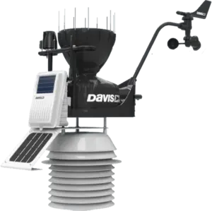
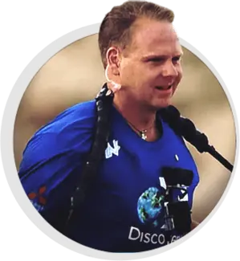
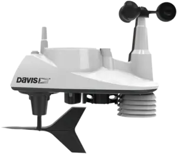

Often, the safe landing of a passenger plane, or the return home of a fire-fighter, or even the success of a wine label depend on precise second-by-second data of hyper-local weather conditions.
But weather isn't just for dare-devils and critical infrastructure. We all have an interest in local weather.
You and I would like to know if we should leave home with an umbrella today. That’s why TV stations install weather stations on their roof-tops.
Schools install weather stations for K-12 STEM students. Hobbyists have them at home, and storm chasers put them on top of their trucks. Surfer Jack O'Neill had one in his garden. Take a walk in a park and you might spot one, left there by a horticulturist.
Coming back to King-of-the-Wire Nik Wallenda, he needs to know if humidity could make his tightrope slippery. His life depends on it. So he depends on Davis.
For over 50-years, Davis Instruments has been a leader in precision weather stations. Industries around the world rely on Davis for making critical decisions that require real-time weather monitoring.
Tungsten created a central idea that captured real users using the product in real-life situations, and putting their trust in Davis. The concept was executed in dramatic and memorable video productions. These videos are endorsements from professionals at the "top of their field", where weather can have a critical outcome on success.
Tungsten's experience in consumer IoT technology makes it particularly suited for engineering products. If you are a marketer with a product targeted at a specific region of the world, or worldwide, Tungsten would like the opportunity to talk to you about your brand, regardless of where on the globe your company is headquartered. We're in San Francisco, and work with clients across the world.